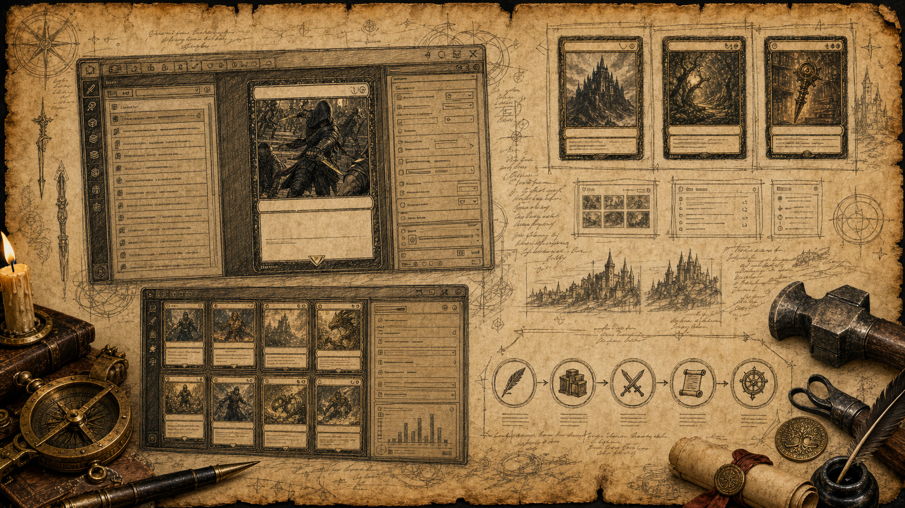
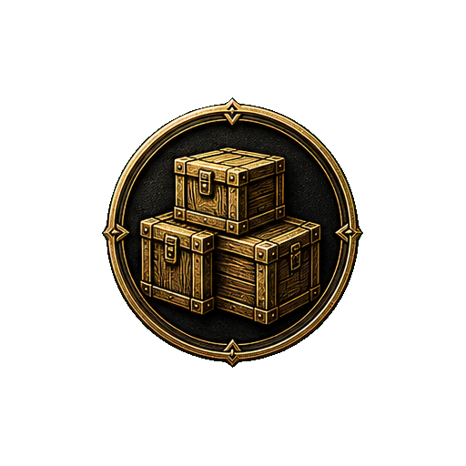

Local First
Everything stays on your machine.
Local-first creator tool
Homebrew Forge turns custom fantasy card ideas into organized projects, playable decks, printable exports, and source files you control.
Everything stays on your machine.
Your projects. Your data.
Powerful tools, zero friction.
Source alpha guide · macOS · Windows · Linux
At the beginning of your turn, you may look at the top card of your deck. If it is a creature card, you may reveal it and put it into your hand.

Case Study
Homebrew Forge began from a simple belief: the best custom card ideas deserve better than scattered screenshots, fragile notes, and one-off exports. It is a modern, offline-first workshop for designing, iterating, and sharing card projects with confidence.
Built for Creators
Craft cards with structured fields, variants, and real-time preview.

Keep cards, assets, sets, decks, and collections in clean lanes.
Test interactions, compare variants, and keep iteration grounded.
Prepare images, print assets, decks, packets, and handoff files.
The Making Loop
Design cards and assets with focused authoring tools.
Build sets, decks, collections, and project libraries.
Simulate choices, inspect variants, and refine balance.
Prepare printable and shareable files from local source truth.
Return to the forge with better data and better decisions.
Source Alpha
Homebrew Forge is actively developed with creators, for creators.
Explore the RoadmapAI-Assisted Build
Homebrew Forge is also a working case study in AI-assisted software craft: intent becomes a plan, the plan becomes code, the code is tested visually, and the shipped result gets written down.
Optional, local, and private.
You provide ideas, constraints, and taste.
The agent reads the repo before acting.
Copy, mechanics, workflows, tests, and fixes.
You review, refine, and keep control.
Under the Hood
packages/editor owns the shared React product UI across web and desktop. packages/forge owns schemas, renderer, importers, exporters, and asset-pack logic. packages/runtime-service owns the route contract, while packages/desktop wraps the app in the no-port Electron shell.
The North Star is Arcane Workshop: parchment, brass, obsidian, dense creative-tool layout, accessible contrast, visible state, and enough fantasy atmosphere to feel purpose-built without becoming a game menu.
The product is real and broad, but still source alpha. Public packaging, signing, repo cleanup, and contributor onboarding are the next gates before this becomes a general download.
Open the Forge
Follow the public source-alpha path, inspect the work, and let your own agent walk the repo with the right project boundaries.